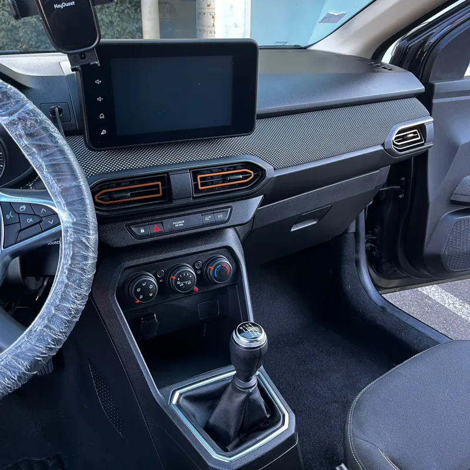
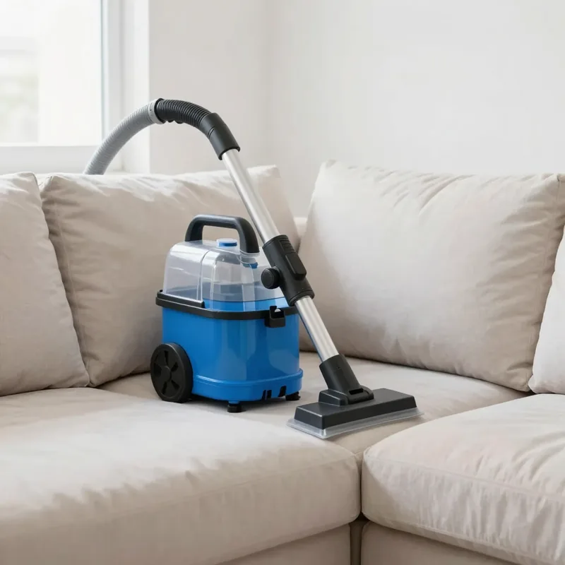
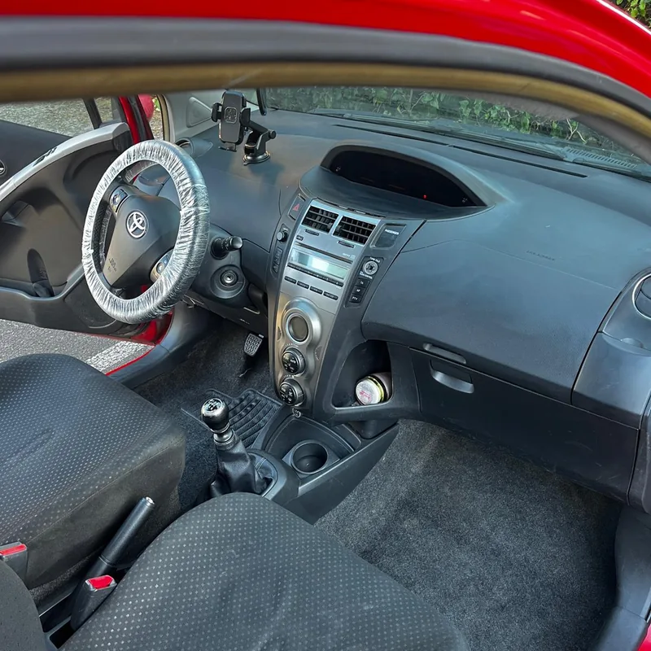
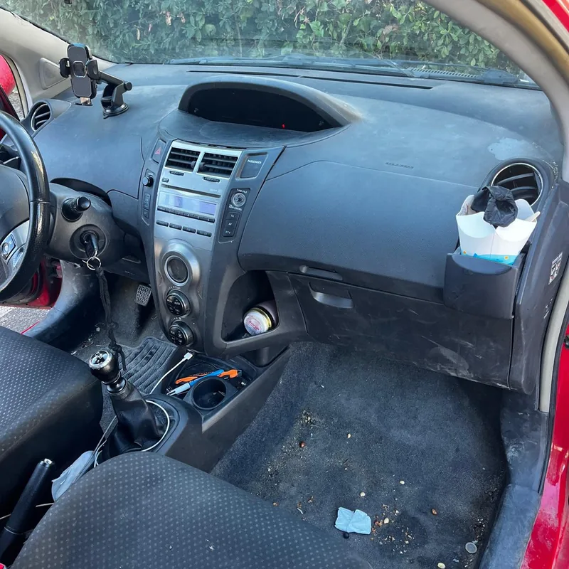
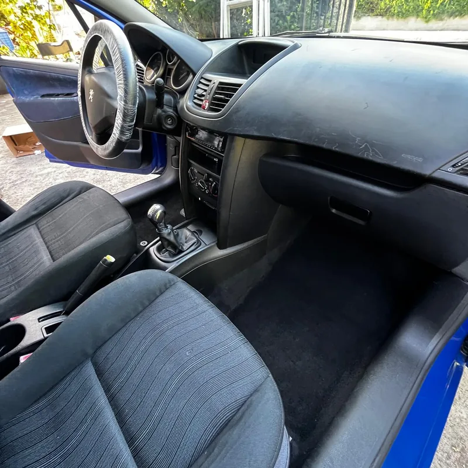
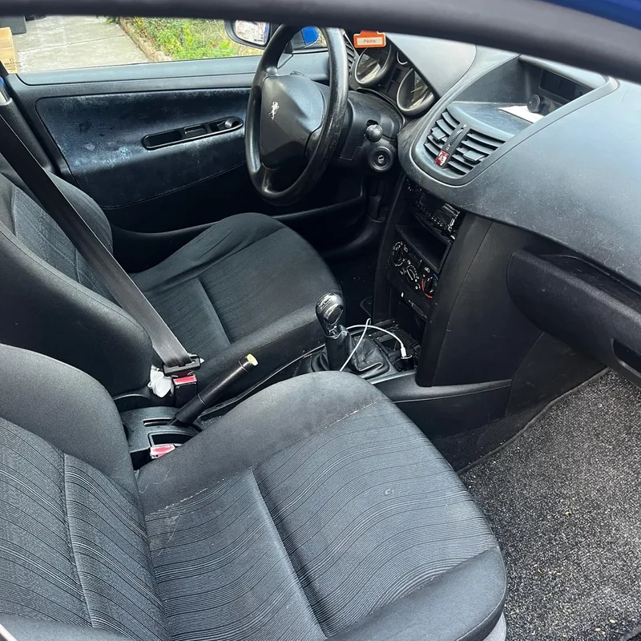
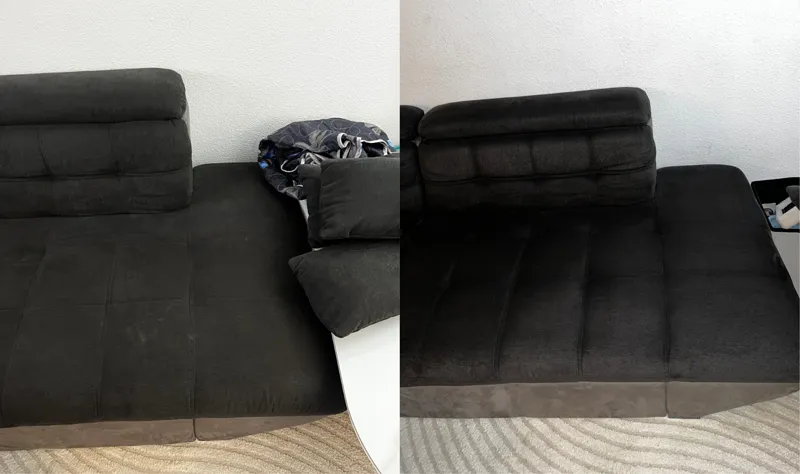
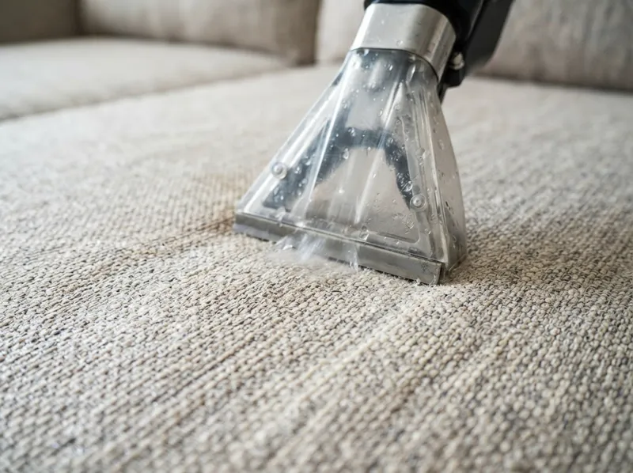

Nettoyage à domicile · Toulouse et agglomération
Canapés, matelas, tapis et intérieurs de voiture : propres en profondeur, chez vous.
Nettoyage professionnel avec du matériel de pro et des produits adaptés à chaque textile, et un tarif annoncé avant de commencer. Intervention sous 48 h à Toulouse et dans un rayon de 40 km.
- Intervention sous 48 h
- Sec en 3 h environ
- Prix fixe, sans surprise
- Avis Google 5/5


CanapésVoituresNos prestations
Ce que nous nettoyons
Tout se fait chez vous ou sur votre place de parking. Il suffit d'une prise électrique.

Intérieur de voiture
Aspiration complète, plastiques, sièges et tapis de sol. Formule Basique ou Premium selon l'état.
Voir la prestation
Canapés & fauteuils
Tissu, microfibre ou velours : taches, auréoles et odeurs traitées en profondeur, sans abîmer les fibres.
Voir la prestation
Matelas
Poussière, acariens et traces. Un matelas assaini, sec en quelques heures.
Voir la prestation
Tapis & moquettes
Tapis nettoyé chez vous, sans l'emporter. Moquettes de chambre, salon ou bureau.
Voir la prestationSimple et rapide
Comment ça se passe
- 1
Vous envoyez une photo
Sur WhatsApp ou par téléphone, décrivez ce qu'il faut nettoyer. Vous recevez un prix fixe dans la foulée.
- 2
On fixe un créneau
Généralement sous 48 h, tous les jours sauf le vendredi, de 7 h à 22 h 30, à l'heure qui vous arrange.
- 3
Nettoyage à domicile
Pré-traitement des taches, injection-extraction, finitions. Comptez 45 min à 2 h selon la prestation.
- 4
Vous profitez
Le textile est sec en 3 h environ. Vous vérifiez le résultat avec nous avant de régler.
Avant / après
Des résultats visibles, pas des promesses


AvantAprès

AvantAprès

Pourquoi Nadifa
Ce qui fait la différence
Injection-extraction professionnelle
Une machine professionnelle qui nettoie dans la fibre, pas seulement en surface. Les taches incrustées partent.
Prix fixe annoncé avant
Le tarif est donné sur photo, avant l'intervention. Pas de supplément découvert sur place.
Réactif
Réponse rapide sur WhatsApp, intervention sous 48 h dans la plupart des cas.
Local et indépendant
Une entreprise toulousaine à taille humaine : c'est la même personne qui répond, qui vient et qui nettoie.
Avis clients
Ils nous ont fait confiance
« J'ai fait nettoyer l'intérieur de ma voiture pro, une Sandero Stepway qui vit sur les chantiers. Les tapis étaient pleins de débris et j'avais des taches sur les sièges que je n'arrivais pas à faire partir. Tout est parti. Sièges nickel, moquettes comme neuves, même les aérateurs et les rainures autour du levier de vitesses sont propres. »
« La voiture était dans un état catastrophique, je ne la reconnais plus. »
Questions fréquentes
Ce qu'on nous demande souvent
Combien de temps faut-il pour que ça sèche ?
Environ 3 heures pour un canapé ou un matelas, grâce à l'extraction qui retire la majeure partie de l'eau. Une pièce aérée accélère encore le séchage.
Dois-je déplacer mon canapé ou mon matelas ?
Non. Nous intervenons à domicile, dans la pièce où se trouve le meuble. Nous avons seulement besoin d'une prise électrique.
Les taches anciennes partent-elles ?
La plupart, oui : traces de boisson, sueur, auréoles, poussière incrustée. Certaines teintures (encre, colorant) peuvent laisser une marque atténuée. Envoyez une photo, nous vous dirons franchement ce qu'il est possible d'obtenir.
Où intervenez-vous ?
À Toulouse et dans un rayon d'environ 40 km : Blagnac, Colomiers, Tournefeuille, Muret, Balma, L'Union, Ramonville, Labège, Castanet… Le déplacement est compris dans le tarif annoncé.
Comment se passe le paiement ?
Vous réglez une fois l'intervention terminée et le résultat vérifié ensemble. Une facture vous est remise.
Un devis clair en quelques minutes
Envoyez une photo de votre canapé, matelas, tapis ou véhicule sur WhatsApp : vous recevez le tarif exact avant toute intervention.